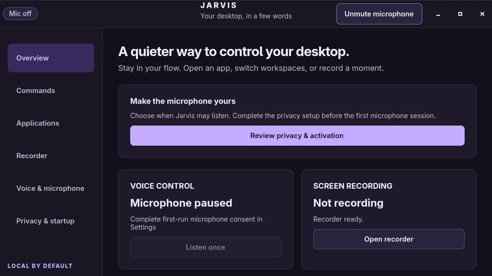

Case study · Voice software · 2026
Open sourceJarvis
Offline voice control for the Linux desktop.
Jarvis runs a Linux desktop by voice. It opens apps, switches workspaces, changes the volume, records the screen and saves the last two minutes of a game. Speech recognition runs entirely on the CPU, with no cloud service, no account and no API key, and nothing you say is stored.

Overview
A desktop that answers to your voice, and nothing else.
I wanted my desktop to respond to my voice the way a phone assistant does, without sending audio to anyone’s server. The constraints were strict from the start: run offline on an ordinary CPU, cost almost nothing while waiting, understand my accent, and never do something dangerous because it misheard me.
Jarvis started as a smaller project called Murmur, built on PocketSphinx. Real use showed that recognizer wasn’t good enough, so the voice pipeline was rebuilt twice. A full code review then drove a round of fixes. This page covers what went wrong along the way and what I changed.
- Apps: open or focus any installed app by name, with your own voice aliases (“streamio” for Stremio).
- Desktop: switch workspaces, move a window, go fullscreen, change or mute the volume.
- Recording: start and stop screen recording with automatic HDR detection.
- Instant replay: the last two minutes stay in RAM; “clip that” saves them.
- Settings: a GTK 4 app that can close while voice control keeps running.
How it works
Two speech models, one strict allowlist.
Jarvis runs as three separate processes. A small service owns settings, app discovery and every action. A voice worker owns the microphone and both speech models. The settings app is just a client: closing it frees its memory and changes nothing else.
The parser and the recognizer’s grammar are built from the same tables, so a phrase is listed only if it can be both heard and understood. The service socket is readable only by your user, and Linux peer credentials reject every other client. Apps that Jarvis launches run in their own systemd scopes, so stopping the service never closes your browser.
Problems and fixes
What broke, and how I fixed it.
The recognizer couldn’t understand me
Problem
The first version used PocketSphinx. In real use the wake word often took four tries, and my non-US accent made commands unreliable. A voice in the background, like a TV or a game, made it worse.
What I did
I split the job between two models. Vosk runs all the time but only listens for “Jarvis” and for the end of speech. Only the few seconds of the command go to Whisper small.en, which was trained on far more accents. The speech threshold follows the room and sits about 10 dB above its steady noise, a command ends after 0.6 s of quiet, and stray words after a command are ignored.
Whisper decodes a command in about 0.3 s, and the always-on part stays at 0.2–0.6% of one core.
Commands spoken over a game were silently dropped
Problem
With background sound, Vosk sometimes never decided the speech had ended. The worker then flushed the command at its 8-second deadline and decoded it, but the service’s own deadline had already passed, so it threw away even a perfect transcript. Slow decoding could also look like a dead microphone.
What I did
The worker now reports when capture actually closed, on a monotonic clock. The service checks that the audio was captured inside the session, then allows up to 15 seconds for the result to arrive. Decoding time no longer counts toward the microphone check. Late, duplicate, low-confidence and cancelled results are still rejected.
“Jarvis, open Steam” opened Steam with the Jarvis window hidden.
Memory crept up after every command
Problem
ONNX Runtime keeps a memory arena for Whisper’s scratch buffers and never gives it back. After a few commands the background process sat at about 1,090 MiB. Idle inference threads also spun on the CPU between tasks.
What I did
I disabled the CPU memory arena in the runtime’s configuration and return freed pages to the OS with malloc_trim(0) after each command. Threads now sleep between tasks. The model weights stay loaded, so commands never pay a reload cost, and precision and decoding are unchanged.
Background memory fell from 1,090 to 657 MiB, and benchmark CPU time for decoding halved, from 51.1 to 25.9 CPU-seconds.
The Commands page listed phrases you could never say
Problem
A code review found that the recognizer’s grammar was written separately from the command parser. Phrases like “please open Firefox” were accepted by the parser but could never come out of the recognizer. The tests still passed, because they only tested the parser.
What I did
The grammar is now generated from the parser’s own tables, and recognizer output is checked against that same grammar. New tests check that every example on the Commands page can be spoken, and that every sentence the grammar allows actually parses.
One source of truth for what you can say, with a regression test for each review finding.
“Open” a Steam game focused the Steam window instead
Problem
To find a running app, Jarvis treated the first word of a desktop entry’s launch command as its window class. Every Steam game launches through steam steam://rungameid/N, so it focused the Steam client. Browser web apps, Flatpak and env launchers had the same problem.
What I did
Known launcher programs are now skipped. Steam games are matched by their real window class, steam_app_N, and web apps by their own class. If both a native and a Flatpak copy exist, Jarvis prefers the native one unless an alias says otherwise.
Games launch, or focus their own window if they are already running.
A crashed service could leave the recorder running
Problem
The screen recorder ran in its own session. If the service crashed, recording continued until the disk filled, and a restarted service had no idea it existed.
What I did
The recorder now starts with a parent-death signal, so it finishes its file and exits when the service dies. It is launched from one long-lived thread, because Linux sends that signal when the thread that started a child exits. On startup the service reports any leftover recorder and partial files, and refuses to start a second one.
No runaway recordings, and partial files are listed instead of lost.
An HDR recording isn’t HDR just because the screen is
Problem
A 10-bit pixel format or an HDR monitor doesn’t prove a recording kept its HDR, and a washed-out preview doesn’t prove it lost it. It’s easy to ship a recorder that silently falls back to SDR.
What I did
Jarvis reads the monitor’s color preset from Hyprland when capture starts and records 10-bit HEVC. Before reporting success, it checks the file with ffprobe for PQ transfer, BT.2020 primaries and limited range. Anything else is reported as an error, and the file is kept for inspection.
A 2,560×1,440 HDR recording and an instant replay both passed the metadata check.
Results
Measured, not guessed.
Every number below comes from a recorded benchmark on my desktop (Ryzen 7 7800X3D, 16 threads) using public test recordings. They show speed and resource use. They don’t measure recognition accuracy across every voice or room, and I don’t claim they do.
| Measurement | Result |
|---|---|
| Command after a pause, median | 1.05 s |
| Command in one breath, median | 0.91 s |
| Whisper decode on its own, median | 286 ms |
| Service start to ready, median of 80 | 87.7 ms |
| Settings window first paint | 86 ms |
| CPU while listening for the wake word | 0.2–0.6% of one core |
| Background memory after commands | 657 MiB |
A trade-off I chose on purpose. Checking commands spoken in one breath more strictly adds about 245 ms of latency. I kept it, because opening the wrong app is worse than waiting a quarter of a second.
Skills
What this project took.
Speech pipelines
Pairing a cheap always-on model with a strong on-demand one; energy gating and end-of-speech detection.
Linux systems
Process lifetimes, parent-death signals, systemd user scopes, and Unix sockets with peer credentials.
Performance work
Reproducible memory and CPU benchmarks; tuning ONNX Runtime’s allocator and thread pool.
Desktop integration
Hyprland’s IPC, GIO desktop entries, PipeWire capture and Waybar status.
Secure design
Allowlisted, typed intents; no shell; bounded queues and message sizes.
Video and HDR
10-bit HEVC capture, instant replay, and metadata validation with FFmpeg tools.
GTK 4 apps
A settings app built as a separate client that can close while the service keeps running.
Testing
176 automated tests, including a regression test for every finding of the code review.
What’s next
Still to prove.
- Interactive tests of window controls on a disposable window under Hyprland.
- Keyboard, screen-reader and fractional-scaling checks in a real desktop session.
- Recognition accuracy measured across more voices, accents and rooms.